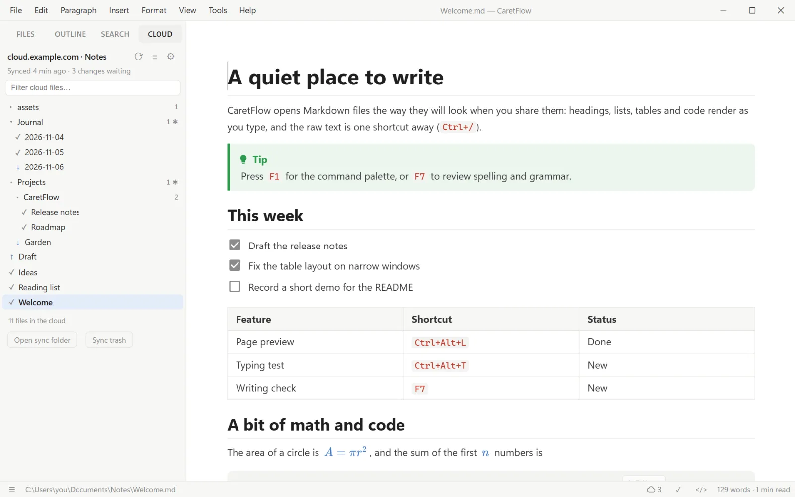
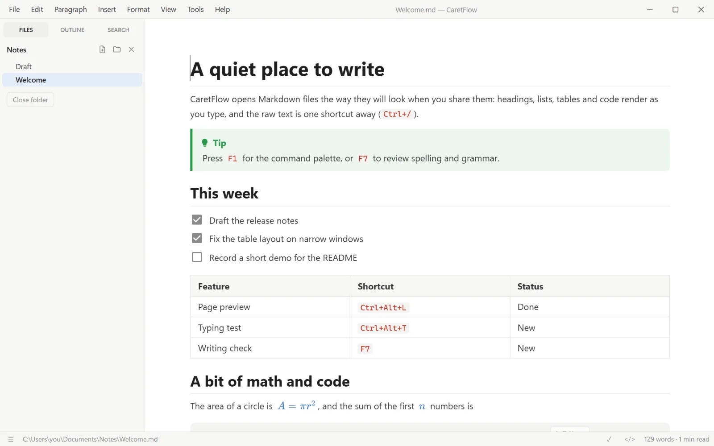
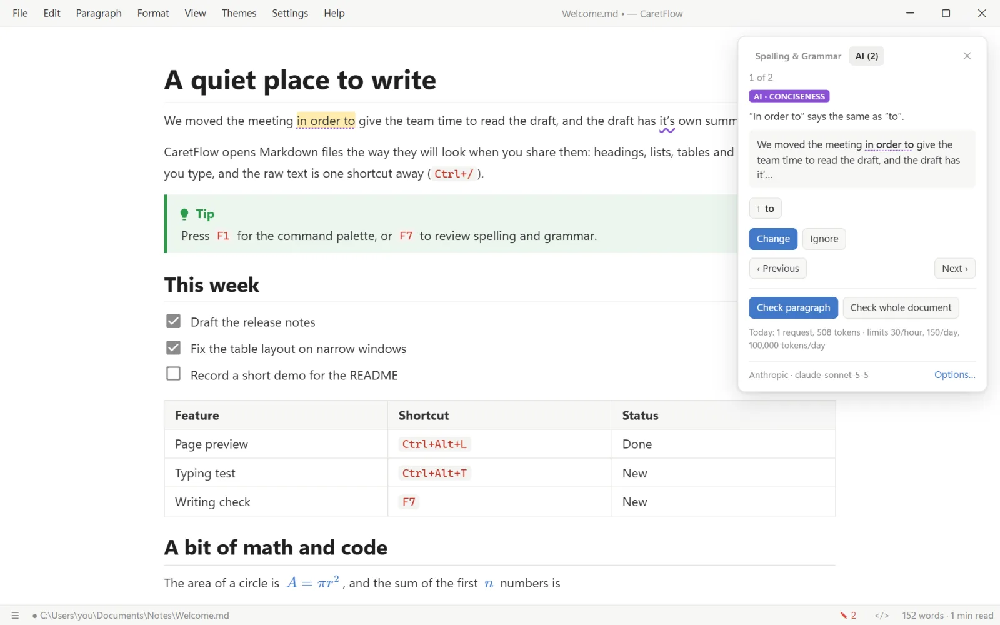
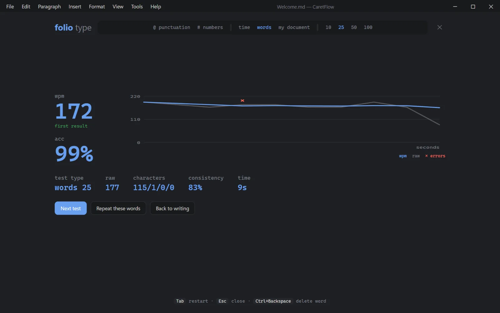

Cloud Sync
Keeps a folder in sync with storage you choose: WebDAV such as Nextcloud or a NAS, S3-compatible storage, or Google Drive and Proton Drive through rclone.
Markdown editor for Windows, Linux and Android
You write, CaretFlow renders it in place: no split preview, no clutter. Raw Markdown and Vim are one shortcut away, and a spelling and grammar checker catches mistakes as you type.
Free and open source (MIT) · no account, no telemetry
CaretFlow checks your writing as you type, the way a word processor does. Right-click a marked word to fix it, or press F7 to walk through every issue one by one.
The checker is Harper and runs offline, so nothing you write leaves your computer. For 30 more languages you can switch to LanguageTool.
going to ship the new editor , so we finished the docs by now. a big release and of people will read it. It fast enough to check a long document while you type, and I a few more ideas for the next version.
| Feature | Shortcut |
|---|---|
| Page preview | Ctrl+Alt+L |
| Writing check | F7 |
Press Ctrl/ and the same document shows its source, with syntax colors and line numbers. Press it again and you are back in the rendered page. Try it here: the shortcut works on this page too.
Vim mode covers source editing, including visual block, macros, registers and :w / :q. Relative line numbers are there if you want them.
Your files stay plain Markdown, so any other app can read them too.
Paper, Sepia, Ink and Slate come with the app. Pick one here and this whole page changes with it.
There is also custom CSS, focus, typewriter and zen modes, and an optional Material You style that builds its colors from one color, or from your wallpaper on Android 12 and later.

This is the real editor, not a recording. It runs in your browser and keeps its files there, so nothing you type is sent anywhere.
About 2 MB to start. The spelling checker loads afterwards.
Every feature is a menu item, has a key, and shows up in the command palette. You can change any of them.
Type a few letters to find any command. Quick open with CtrlP jumps to any file in the folder.
Page breaks, headers, footers and page numbers, with a live page preview beside your text. It works from the command line too.
On an empty line, / adds headings, lists, tables, code, math or a Mermaid diagram.
A sidebar with the outline, the file tree and search across the whole folder.
Dims everything but the paragraph you are in. Typewriter mode (F9) keeps the line centered, and zen mode hides the rest.
Fonts, spacing, line numbers, custom shortcuts and your own CSS, sorted by topic.
Bigger features ship with CaretFlow but stay out of your menus until you install them with one click. Until then their code never loads.

Keeps a folder in sync with storage you choose: WebDAV such as Nextcloud or a NAS, S3-compatible storage, or Google Drive and Proton Drive through rclone.

Suggestions from Claude, ChatGPT, Gemini and others with your own API key, or from a model on your computer. Nothing changes until you click Apply.

A minimal speed test by time or word count, or on your own document, with words per minute, accuracy and a per-second chart.
CaretFlow has no servers or accounts of its own. Cloud Sync and AI help only talk to the services you set up, and only once you turn them on.
A live words-per-minute meter and a small companion that taps along while you write. Both are off until you turn them on in the Tools menu.
Free, for Windows, Linux and Android. Pick a file from the latest release.
There is no macOS build yet. Until there is one, the browser version works on a Mac. To build CaretFlow yourself, see the build notes.